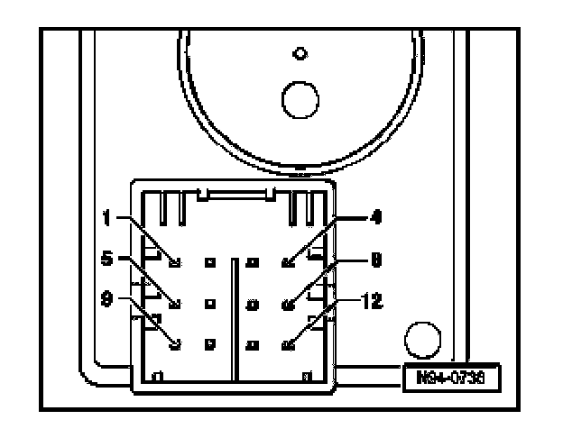

Ignition Switch: Diagrams
Access/Start Authorization Switch -E415-, Multi-pin Connector Assignments
Connector, 12 pin:

Connector, 12 pin
1. Switch contact 2
2. Ignition key withdrawal lock solenoid
3. Voltage supply, negative
4. Immobilizer, "Shift lock"
5. Switch contact 1
6. Switch contact 6
7. Switch contact 3
8. Immobilizer, data 2
9. Voltage supply, positive
10. Switch contact 5
11. Switch contact 4
12. Immobilizer, data 1